前言
skynet官方没有提供windows版本，而在windows上进行开发则往往能够给我们提供极大的便利，一般而言，我们本地进行开发需要安装虚拟机(或者真机上安装linux)，然后在虚拟机(或真机)内部署skynet进程。为了能够方便地进行开发，我们将采用sublime text编辑器，通过安装SFTP插件，来将我们的代码同步到虚拟机(或真机)上。
安装linux ubuntu系统（虚拟机or真机安装）
SFTP安装与配置流程
安装方法：ctrl+shift+p，在弹出来的框内输入Install Package
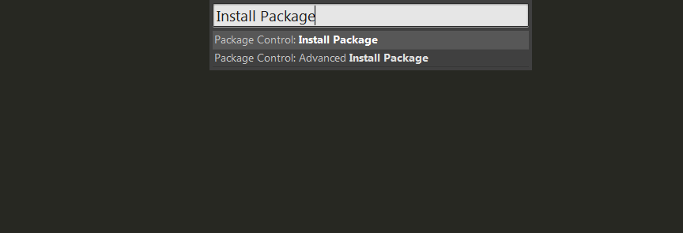在后面弹出来的框内输入SFTP，然后按下回车键就会自动安装
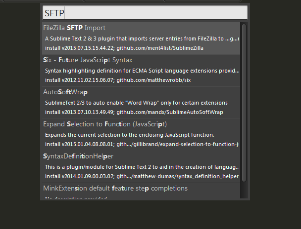
SFTP的作用是，在windows上写的代码，能够同步更新到ubuntu上右键项目根目录，选择SFTP/FTP，选择Edit Remote Mapping对SFTP进行配置
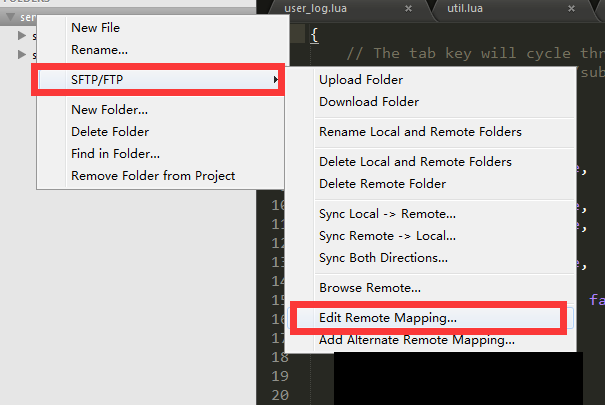这里需要配置几个部分：host（linux地址），user（linux账户名），password（linux账户密码），remote_path（linux上要被同步的文件夹，确保在linux上已经创建）
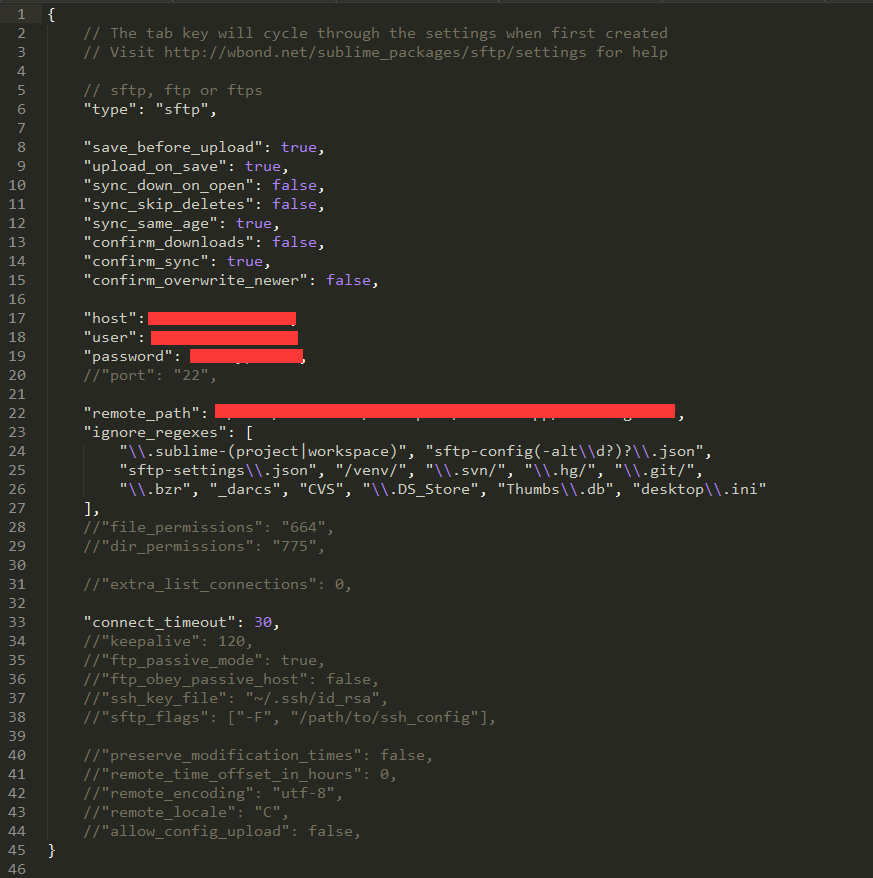
另外upload_on_save属性要设置为true，这样每次保存都会自动上传其他插件安装：AutoFindName（输入字母自动补全），AllAutoComplete（类似VisualAssixtX的只能提示），ConvertToUTF8（乱码解决方案），可不装，但是安装了可以极大方便开发
存放代码的服务器文件夹拖到sublime中，我的目录结构如下面所示:
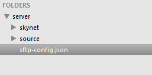同步到服务器：一般情况下，只要按照上述步骤走，ctrl+s的时候，也会同步到服务器上，不过改动特别多的时候，比如从svn或git上update了，那么需要将整个文件夹进行一次同步，如
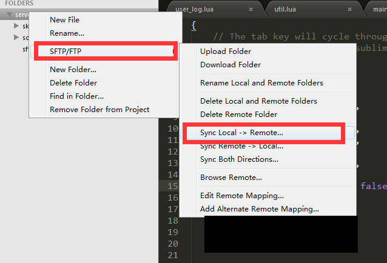
通过这种方式进行同步，服务器编译出来的文件会被删掉，因此需要重新编译注意，同步之前一定要确保相应的目录是存在的
skynet编译及运行
- 进入skynet文件目录，输入make linux就可以进行编译，如果jemalloc模块无法编译，可以输入make linux MALLOC_STATICLIB= SKYNET_DEFINES=-DNOUSE_JEMALLOC
- 编译结束后，会出现skynet*的文件，相当于windows下的exe文件，运行指令为./skynet config_path
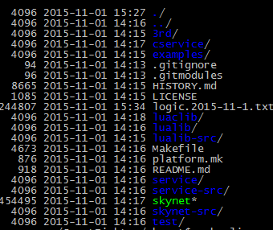
config_path是config文件存放的路径 - 关于config文件，云风的wiki说的很清楚了，这里特别强调一下，config中的root一般设置为skynet的根目录logger = nil，日志默认输出在控制台，也可以指定定一个脚本，来创建一个自定义的logservice，不过此时logger要指定一个自己写的lua脚本，并且logservice赋值为snlua，表示自定义的log服务是使用lua写的
- 在完成了config配置，指定了启动脚本以后，我们就可以在启动脚本里写一个Hello Skynet，使用./skynet config_path指令启动skynet，ubuntu下ctrl+c可以退出
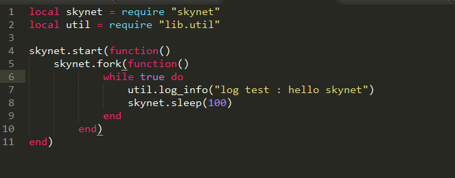
这里每隔一秒就会输出一个hello skynet，这里我自己实现了logservice，大家可以暂时忽略
关于SecureCRT
虽然按照上面的步骤可以把windows上修改的内容同步到linux上，但是这样操作起来还不是很方便，我们可以下载SecureCRT，在windows上操作Ubuntu
- 安装SecureCRT
创建链接
右键Session，选择New Session
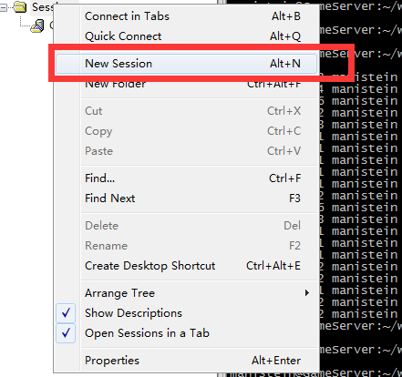选择ssh2，点击下一步
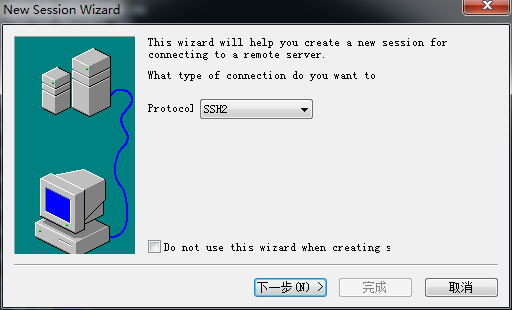hostname填写服务器名称，username填写账号名称，防火墙不开
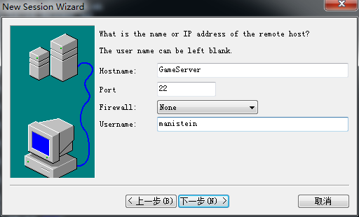下一步，确定，创建完成，下图展示SecureCRT终端 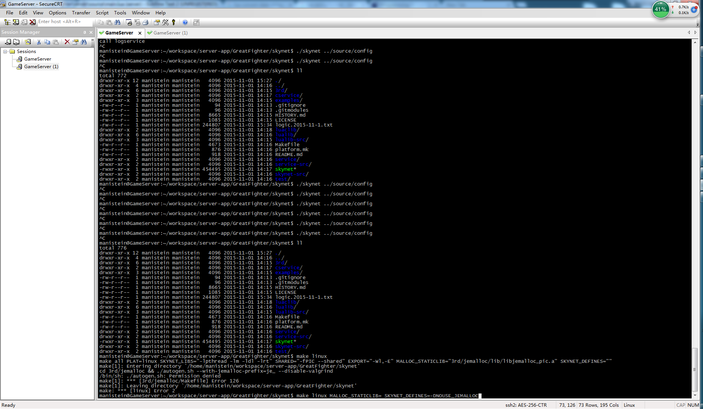